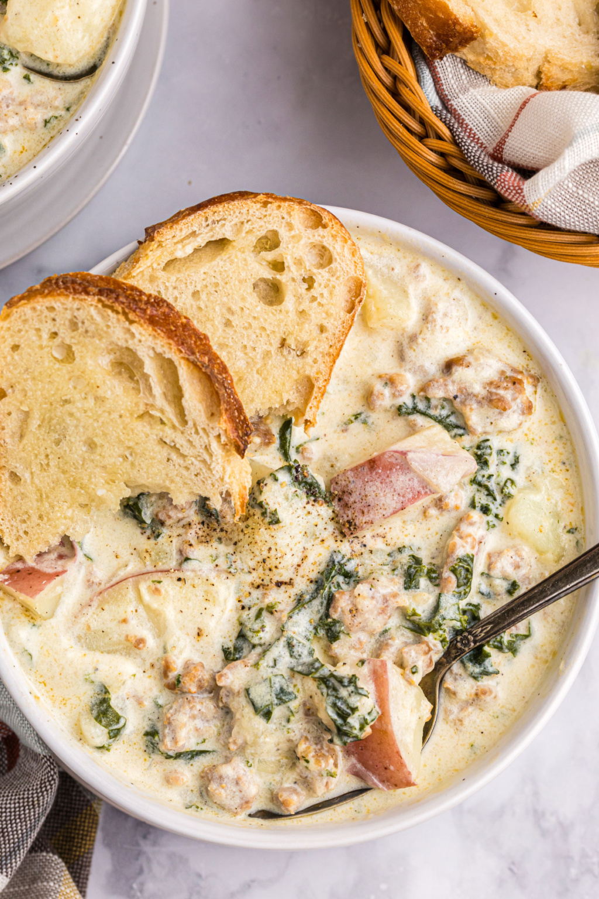

Potato Sausage and Kale Soup

Description
If you've ever visited Oliver Garden, you might have had the opportunity to eat one of its tastiest soups, Zuppa Toscana, but you don't need to go there to have it. It's very easy to make, has wonderful flavors, and is perfect for cold days when you might not want to cook.
This soup contains a wonderful mix of savory sausage, fresh kale, hearty potatoes, and cream to fill up your empty stomach and keep you full for a long time. Whether you want to go sledding, skiiing, or just curl up with a good book, this soup will keep you fueled for those frosty days.
Ingredients
- 8 ounces sweet Italian sausage
- 1 medium onion, finely chopped
- 2 tsp chicken bouillon granules
- 1/2 tsp garlic powder
- 1/2 tsp freshly ground black pepper
- 2 medium red potatoes, cut in 1/2 inch cubes
- 2 C sliced fresh kale
- 3 C 2% milk
- 1 C heavy whipping cream
- 1 Tblsp cornstarch
- 1/4 C cold water
Steps
- In a large saucepan, cook the sausage and onion over medium heat for 4-6 minutes or until the sausage is no longer pink and the onion is tender, rbeaking up the sausage into crumbles; drain.
- Stir in the seasonings. Add the potatoes, kale, milk, and cream; bring to a boil. Reduce the heat; simmer, covered, for 10-15 minutes or until the potatoes are tender.
- In a small bowl, mix the cornstarch and water until smooth; stir into the soup. Return to a bowl, stirring constantly; cook and stir for 1-2 minutes or until thickened. Serve with fresh bread if desired.